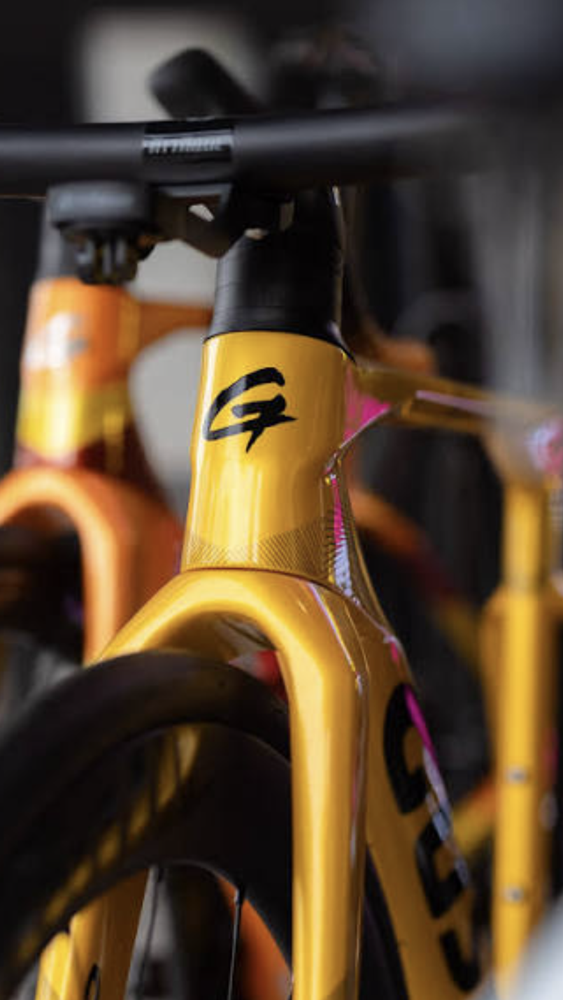
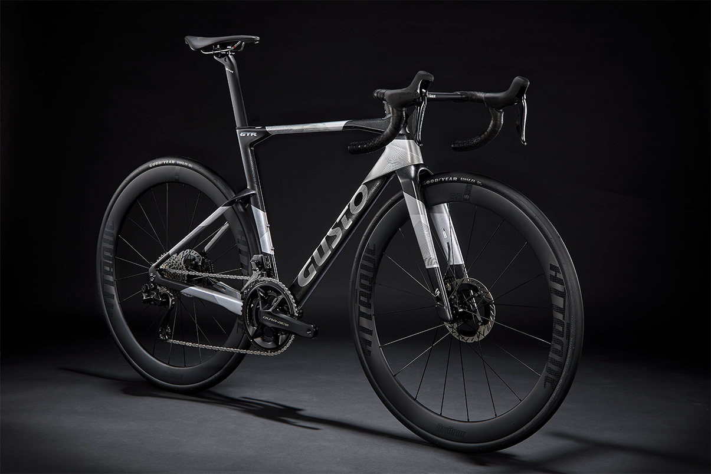

Structural stiffness
Material and tube forms are arranged to support decisive power transfer and predictable handling.
Engineering / Material intelligence
Performance is not a single number. It is the relationship between structure, feedback and control—resolved across the complete bicycle.
Explore I.L.C. carbon
The design brief
A fast frame needs to turn effort into motion. A useful frame must also communicate the road without amplifying every imperfection.
Gusto approaches those demands as one system: shaping, lay-up and reinforcement working together rather than chasing an isolated headline figure.
I.L.C. / Innegra Latex Composite
I.L.C. combines high-rigidity carbon fibre with reinforcement intended to improve impact resistance and manage vibration. The aim is a frame that feels direct under power and composed as distance and surface demands increase.
Material and tube forms are arranged to support decisive power transfer and predictable handling.
Reinforcement is introduced where added toughness can support durability without unnecessary bulk.
The construction is designed to temper high-frequency road noise while preserving useful feedback.

From fibre to feeling
Carbon construction is an exercise in placement. Fibre orientation, overlap and local reinforcement influence how a frame carries load and how the rider experiences the road.
That is why engineering continues beyond material selection. Geometry, junctions and the contact points are considered as part of the same response.
Complete-system thinking
Tube profiles, junctions and lay-up establish the platform’s core response.
Fit, frontal area and steering input meet at the rider’s primary control surface.
Position and handling are balanced around the intended terrain and riding character.
The final measure is not a component in isolation, but how clearly the whole bicycle communicates.

Engineering, applied
Each platform interprets the same principles for a different purpose—from immediate race response to all-road composure.
Explore the range ↗